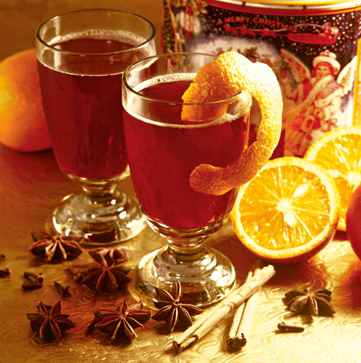

Vin fiert cu scortisoara

- Vinul se trece printr-o sită deasă, ca să se evite formarea spumei abundente.
- Se amestecă cu zahărul, cu steluţele de anason şi cu scorţişoara şi se lasă să fiarbă la foc potrivit până se dizolvă zahărul, apoi se mai lasă pe foc doar până începe să facă spumă.
- Portocala se curăţă de coajă, care se aranjează pe pahar, iar feliuţele decojite se pun în pahar.